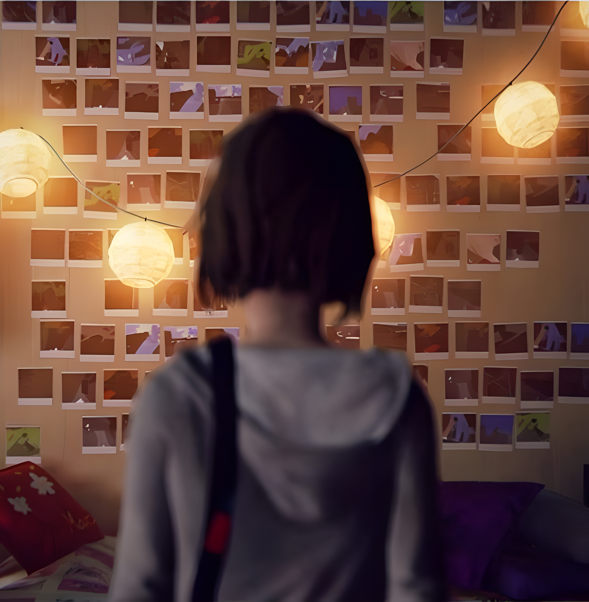
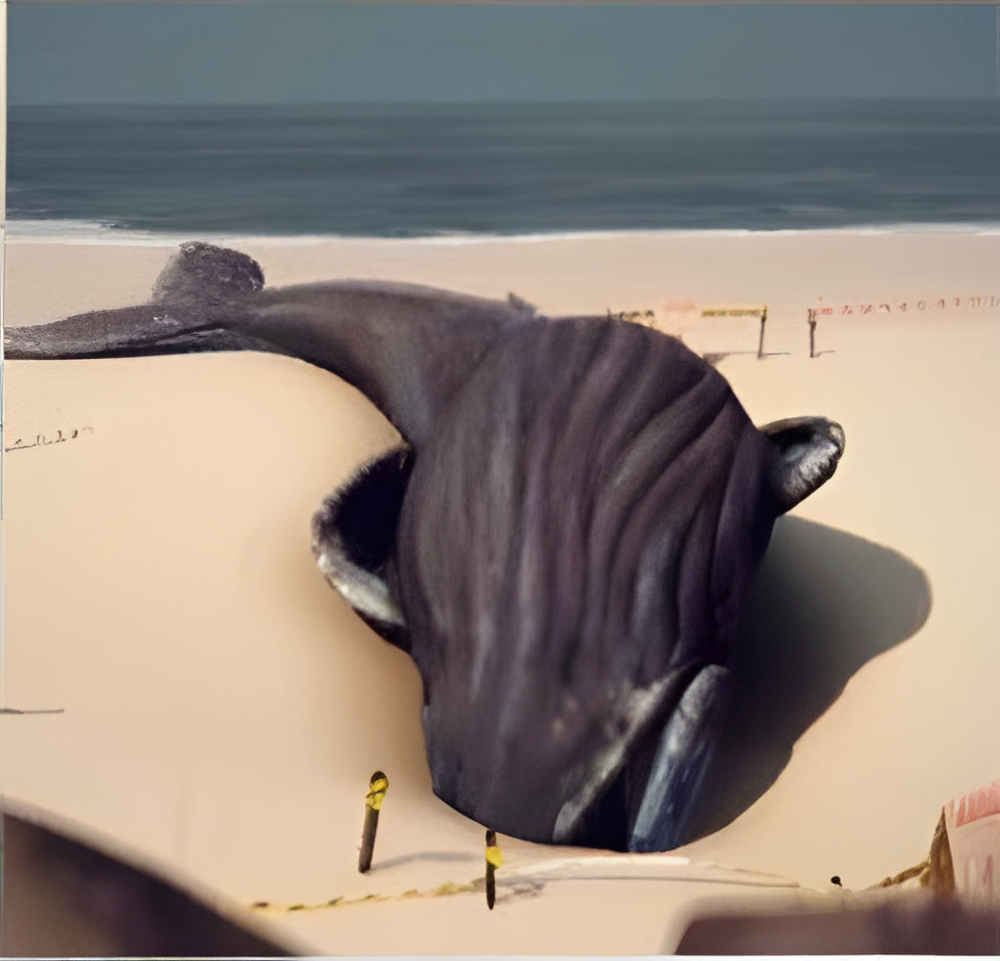
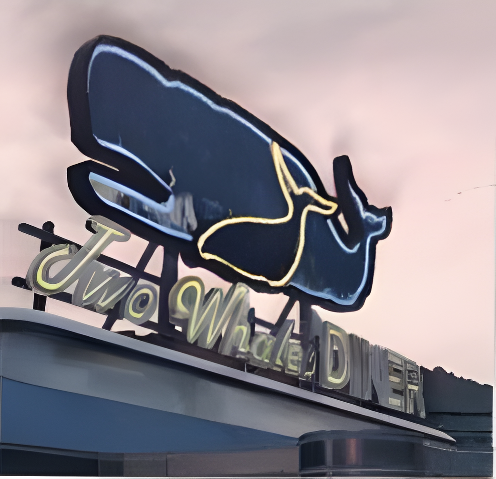
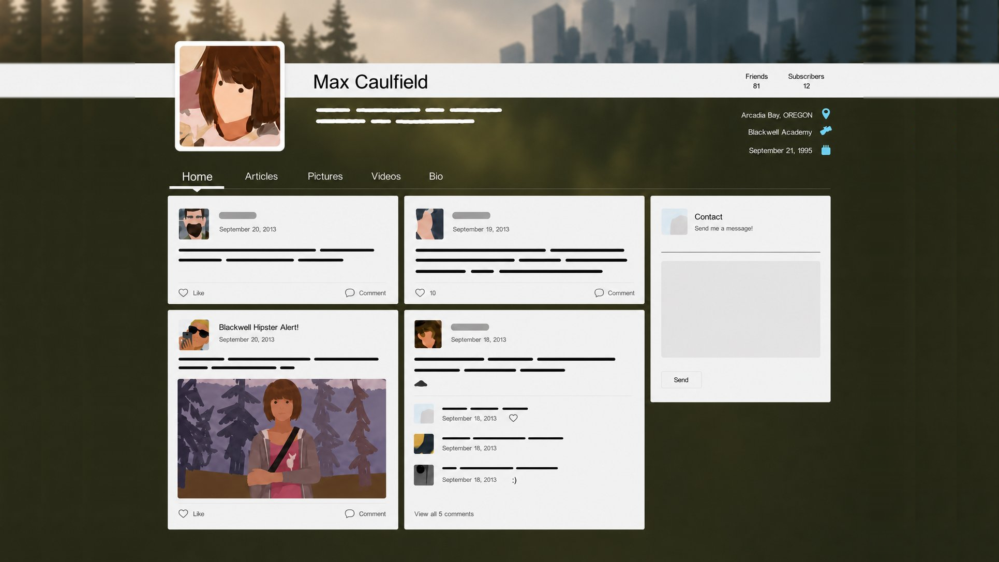

Butterfly Effect
The concept is simple: a single, random event can completely rewrite how a life turns out. One minor choice triggers a chain reaction, altering the future in ways that are impossible to predict at the time.
The concept is simple: a single, random event can completely rewrite how a life turns out. One minor choice triggers a chain reaction, altering the future in ways that are impossible to predict at the time.


In a quiet environment like this, every action causes a drastic shift. Decisions that seem completely minor in the moment end up triggering massive consequences later on.
"The welcome sign is old and peeling. It is a quiet setting for a place where everything is shifting under the surface."
A major shift usually impacts personal relationships first. A single choice can permanently alter a friendship or break a connection with someone, leaving no way to go back and fix the damage.
When a timeline changes, the hardest part is dealing with the fallout. Eventually, there is no choice left but to accept the new reality, even when the final outcome isn't what anyone wanted.



This action will have consequences...


